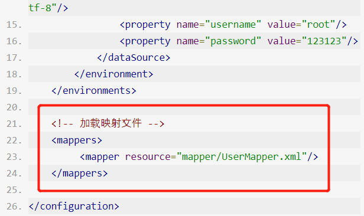
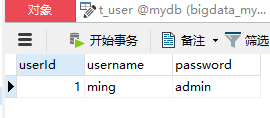

编写MyBatis入门程序
步骤：
- 创建Maven项目、编辑POM文件、加入MyBatis配置
- 创建数据库、定义表
- 创建Java实体类
- 创建并配置MyBatis核心配置文件
- 创建SQL映射文件
- 编写测试代码实现插入数据的功能
- 查看结果
具体实现
1.新建一个Maven项目
新建一个名为 MybatisDemo 的项目
2. 加入MyBatis 依赖
在 pom.xml文件 中加入依赖。
<dependencies>
<!--MyBatis依赖-->
<dependency>
<groupId>org.mybatis</groupId>
<artifactId>mybatis</artifactId>
<version>3.4.6</version>
</dependency>
<!--数据库相关依赖-->
<dependency>
<groupId>mysql</groupId>
<artifactId>mysql-connector-java</artifactId>
<version>5.1.35</version>
<scope>runtime</scope>
</dependency>
<!--日志相关依赖 -->
<dependency>
<groupId>log4j</groupId>
<artifactId>log4j</artifactId>
<version>1.2.17</version>
</dependency>
<dependency>
<groupId>org.slf4j</groupId>
<artifactId>slf4j-api</artifactId>
<version>1.7.12</version>
</dependency>
<dependency>
<groupId>org.slf4j</groupId>
<artifactId>slf4j-log4j12</artifactId>
<version>1.7.12</version>
</dependency>
</dependencies>
<!--设置编译源代码的JDK版本为1.8-->
<build>
<plugins>
<plugin>
<artifactId>maven-compiler-plugin</artifactId>
<configuration>
<source>1.8</source>
<target>1.8</target>
</configuration>
</plugin>
</plugins>
</build>
3. 准备一个数据库
我们需要准备一个数据库。
MySQL数据库：mydb;
用户表： t_user。
| 列名 | 类型 | 非空 | 注释 |
|---|---|---|---|
| userId | int | √ | 用户ID 主键 |
| userName | varchar | √ | 用户名 |
| passWord | varchar | √ | 用户密码 |
4. 创建Java中对应表的类
public class User {
private Integer userId;
private String userName;
private String passWord;
//省略构造器和getter和setter方法
}
5. 创建并配置MyBatis的核心配置文件
配置 MyBatis 有多种方式。在这里使用最基础的XML配置。
在src/main/resource下面创建mybatis_config.xml配置文件。
<?xml version="1.0" encoding="UTF-8"?>
<!DOCTYPE configuration
PUBLIC "-//mybatis.org//DTD Config 3.0//EN"
"http://mybatis.org/dtd/mybatis-3-config.dtd">
<configuration>
<!-- 和spring整合后 environments配置将废除 -->
<environments default="development">
<environment id="development">
<!-- 使用JDBC事务管理 -->
<transactionManager type="JDBC"/>
<!-- 数据库连接池 -->
<dataSource type="POOLED">
<property name="driver" value="com.mysql.jdbc.Driver"/>
<property name="url" value="jdbc:mysql://localhost:3306/mydb?useUnicode=true&characterEncoding=utf-8"/>
<property name="username" value="root"/>
<property name="password" value="123123"/>
</dataSource>
</environment>
</environments>
</configuration>
6. 创建sql映射文件
UserMapper.xml 和 UserMapper.java
在src/main/java/com/test/mapper包下创建UserMapper.java。
public interface UserMapper {
//添加用户
void addUser(User user);
}
7.创建Mapper对应的配置文件
在src/main/resource/mapper包下创建UserMapper.xml。
<?xml version="1.0" encoding="UTF-8"?>
<!DOCTYPE mapper PUBLIC "-//mybatis.org//DTD Mapper 3.0//EN" "http://mybatis.org/dtd/mybatis-3-mapper.dtd">
<!-- 命名空间：MyBatis就是通过这个值将接口和XML关联起来的 -->
<mapper namespace="com.test.mapper.UserMapper">
<!-- 插入user方法 -->
<insert id="addUser" parameterType="com.test.pojo.User">
insert into t_user(userId,userName,passWord)
values(#{userId},#{userName},#{passWord})
</insert>
</mapper>
8.在配置文件中加入某个类的配置
<!-- 加载映射文件 -->
<mappers>
<mapper resource="mapper/UserMapper.xml"/>
</mappers>
将以上配置加入到主配置文件中。

9.编写测试代码。
package com.test.test;
import com.test.mapper.UserMapper;
import com.test.pojo.User;
import org.apache.ibatis.io.Resources;
import org.apache.ibatis.session.SqlSession;
import org.apache.ibatis.session.SqlSessionFactory;
import org.apache.ibatis.session.SqlSessionFactoryBuilder;
import java.io.IOException;
import java.io.Reader;
import java.text.ParseException;
import java.text.SimpleDateFormat;
public class UserTest {
private static SqlSessionFactory sqlSessionFactory;
public static void main(String[] args) throws ParseException {
User user = new User(1,"ming","admin");
insertUser(user);
}
public static void init() {
try {
//1.读取MyBatis核心配置文件
Reader reader = Resources.getResourceAsReader("mybatis_config.xml");
//2.通过reader实例化sqlSessionFactory对象
sqlSessionFactory = new SqlSessionFactoryBuilder().build(reader);
} catch (IOException e) {
e.printStackTrace();
}
}
public static void insertUser(User user) {
init();
SqlSession sqlSession = null;
try {
//3.获取sqlSession。
sqlSession = sqlSessionFactory.openSession();
//4.查找到mapper.xml中id="addUser"的方法执行SQL。
UserMapper mapper = sqlSession.getMapper(UserMapper.class);
mapper.addUser(user);
//5.提交事务
sqlSession.commit();
} catch (Exception e) {
e.printStackTrace();
} finally {
if (sqlSession != null) {
//6.最后一定不要忘记关闭sqlSession。
sqlSession.close();
}
}
}
}
运行然后查看效果：

查询
使用 city.sql 作为数据源， 编写代码将对象和数据库的数据进行映射。
将数据库改为 Phoenix
在 mybatis_config.xml 中修改如下配置
- 修改驱动：
org.apache.phoenix.jdbc.PhoenixDriver
- 修改连接地址
jdbc:phoenix:你的IP:2181
- 将 insert 语句 改为 upsert
添加 pom 配置：
<dependency>
<groupId>org.apache.hadoop</groupId>
<artifactId>hadoop-client</artifactId>
<version>2.7.7</version>
</dependency>
<dependency>
<groupId>org.apache.phoenix</groupId>
<artifactId>phoenix-core</artifactId>
<version>5.0.0-HBase-2.0</version>
</dependency>